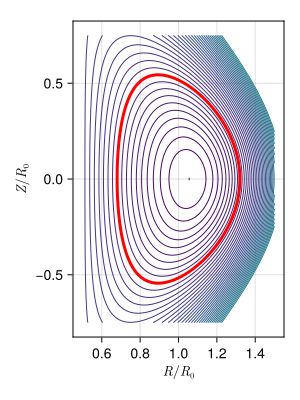
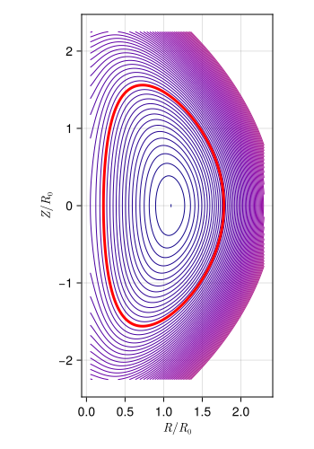
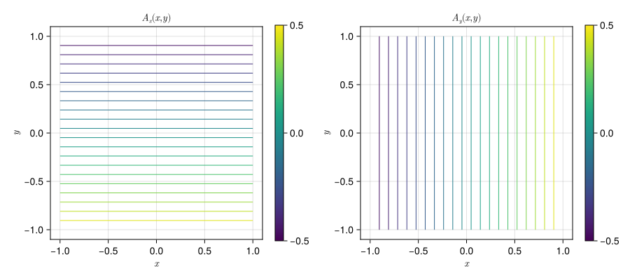
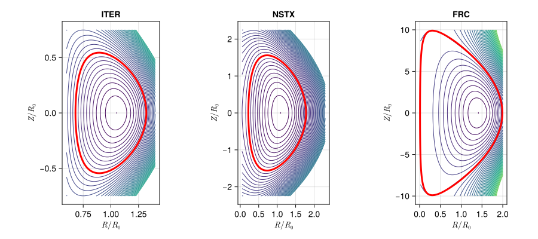
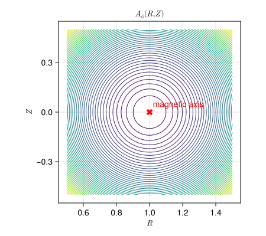
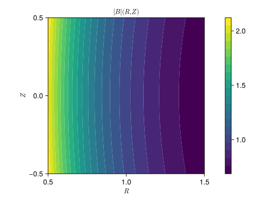

Plotting
Most analytic equilibria can be plotted directly; the exceptions are the three Penning traps, which have no plotting method and say so in an ArgumentError. The plotting routines are provided by a package extension, so they become available as soon as Makie or one of its backends is loaded. For documentation and other static output CairoMakie is the natural choice:
using CairoMakie
using ElectromagneticFields
plot_equilibrium(Solovev.ITER())
What is shown depends on the field. For the tokamak and Solov'ev equilibria it is the poloidal flux function $\psi$, whose contours are the flux surfaces — that is the third covariant component A₃, which is $A_\phi$ in the toroidal charts and $R \, A_y$ in the cartesian tokamak. The Solov'ev equilibrium draws the plasma boundary on top in red; it is the only one that does. For the remaining fields defined in cartesian coordinates the plot shows one panel per component of the vector potential, and for the ABC field the absolute value of the magnetic field in the three mid-planes.
Adjusting the Plot
Every method accepts the number of contour levels, the axis labels title, xlabel and ylabel, the aspect ratio, and an opt-in colorbar. Most of them are sampled on a rectangular grid and accordingly take its resolution as nx and ny and its extent as xlims and ylims; the ABC field is the exception, being sampled on a cubic grid of nx points per direction. The Solov'ev equilibrium takes boundary in addition, to switch off the plasma boundary drawn on top of the flux surfaces. The figure size belongs to plot_equilibrium alone — plot_equilibrium! draws into a figure that already has one.
Anything not recognised is forwarded to Makie's contour!, so e.g. colormap and linewidth work too:
plot_equilibrium(Solovev.NSTX();
xlims = (0.05, 2.3),
ylims = (-2.25, +2.25),
levels = 60,
size = (350, 500),
colormap = :plasma,
)
The colorbar, off by default, is built from the range of the data, since a line contour carries no colormap Makie could derive one from:
plot_equilibrium(ThetaPinch.init(); colorbar = true, size = (900, 400))
Composing Figures
plot_equilibrium creates a figure of its own. To draw into an existing one — to compare several configurations side by side, or to combine an equilibrium with other plots — use plot_equilibrium!, which takes any Makie grid position as its first argument. It works the same way for the fields that draw a single panel and for those that draw one per component:
fig = Figure(size = (900, 400))
plot_equilibrium!(fig[1,1], Solovev.ITER();
title = "ITER", xlims = (0.6, 1.4))
plot_equilibrium!(fig[1,2], Solovev.NSTX();
title = "NSTX", xlims = (0.05, 2.3), ylims = (-2.25, +2.25))
plot_equilibrium!(fig[1,3], Solovev.FRC();
title = "FRC", xlims = (0.0, 2.0), ylims = (-10.0, +10.0),
aspect = AxisAspect(0.5))
fig
Note the aspect keyword on the last panel. By default the axes use DataAspect(), so that one unit in $R$ has the same length as one unit in $Z$. That is the right choice almost everywhere, but a field reversed configuration is so elongated that it would leave the panel a thin sliver, hence the explicit aspect ratio.
plot_equilibrium! returns the Axis it created — or the vector of axes, for the fields that draw more than one panel — so the axis can be adjusted afterwards:
fig = Figure(size = (450, 400))
ax = plot_equilibrium!(fig[1,1], AxisymmetricTokamakCylindrical.init())
scatter!(ax, [1.0], [0.0]; marker = :xcross, color = :red, markersize = 15)
text!(ax, 1.02, 0.02; text = "magnetic axis", color = :red)
fig
Plotting by Hand
The routines above cover the flux surfaces and the vector potential, which is what one usually wants to look at. For everything else, evaluate the field yourself and plot the result — the generated functions return plain numbers and the grids are plain arrays, so there is nothing special about it:
AxisymmetricTokamakCylindrical.@code()Rgrid = LinRange(0.5, 1.5, 100)
Zgrid = LinRange(-0.5, 0.5, 120)
Bfield = [B(0.0, Rgrid[i], Zgrid[j], 0.0) for i in eachindex(Rgrid), j in eachindex(Zgrid)]
fig = Figure(size = (500, 400))
ax = Axis(fig[1,1]; xlabel = L"R", ylabel = L"Z", title = L"|B| (R,Z)", aspect = DataAspect())
cf = contourf!(ax, Rgrid, Zgrid, Bfield; levels = 20)
Colorbar(fig[1,2], cf)
fig
The index order matters: Bfield[i,j] has to hold the value at (Rgrid[i], Zgrid[j]), which is what the comprehension above produces and what Makie expects.
Reference
ElectromagneticFields.plot_equilibrium — Function
Plot an analytic equilibrium, typically as a contour plot of its vector potential.
plot_equilibrium(equ; size = ..., figure = NamedTuple(), kwargs...)Creates a new Makie.Figure, draws equ into it and returns the figure.
Plotting is provided by a package extension, so Makie (or one of its backends, e.g. CairoMakie or GLMakie) needs to be loaded for these methods to exist:
using CairoMakie
using ElectromagneticFields
plot_equilibrium(Solovev.ITER())Which quantity is shown depends on the equilibrium. For the tokamak and Solov'ev equilibria it is the poloidal flux function $\psi$, whose contours are the flux surfaces; that is the third covariant component A₃ of the vector potential — $A_\phi$ in the toroidal charts, $R \, A_y$ in the cartesian tokamak. For the remaining fields defined in cartesian coordinates it is a panel per vector potential component, and for the ABC field the absolute value of the magnetic field in three mid-planes.
The figure size defaults to one chosen per equilibrium, and everything in figure is passed on to Makie.Figure. Both can carry a size; the precedence is the per-equilibrium default first, then figure, then an explicit size. All remaining keyword arguments are forwarded to plot_equilibrium!.
See also plot_equilibrium!.
ElectromagneticFields.plot_equilibrium! — Function
Plot an analytic equilibrium into an existing figure.
plot_equilibrium!(position, equ; kwargs...)Draws equ at position, which is any Makie grid position such as fig[1,2], and returns the Axis it created, or the vector of axes for the equilibria that draw more than one panel. This is what to use for composing several equilibria into a single figure:
using CairoMakie
using ElectromagneticFields
fig = Figure(size = (1200, 400))
plot_equilibrium!(fig[1,1], Solovev.ITER())
plot_equilibrium!(fig[1,2], Solovev.NSTX(); xlims = (0.05, 2.3), ylims = (-2.25, +2.25))
figLike plot_equilibrium, this requires Makie to be loaded.
Keyword Arguments
Common to every method:
levels: number of contour levels, or the levels themselvestitle,xlabel,ylabel: axis labels, each panel providing its own defaultaspect: axis aspect ratio,DataAspect()by defaultcolorbar: draw a colorbar next to each panel,falseby default
Anything not recognised is forwarded to Makie.contour!, so e.g. colormap and linewidth work as well.
The remaining keywords depend on the field. Most methods take the resolution of the evaluation grid as nx and ny and the plot range as xlims and ylims. The exceptions are
ABCEquilibrium, which is sampled on a cubic grid ofnxpoints per direction covering $[0, 2\pi]$, and takesnifor the index of the mid-plane, by default the grid point closest to $\pi$ (exactly $\pi$ for oddnx);SolovevEquilibrium, which takesboundaryto switch off the plasma boundary drawn in red on top of the flux surfaces, resolved withnτpoints. It is the only equilibrium that draws one.
For the Solov'ev equilibria, an integer levels counts levels spaced uniformly in $\psi$ and anchored to the flux on the magnetic axis, with one level on the plasma boundary and a quarter of them inside it. Spreading them over the sampled range instead would spend nearly all of them on the far field, where $\psi$ grows without bound. Passing the levels themselves bypasses this, as everywhere else.
Not every equilibrium has a plotting method: the three Penning traps have none, and report so in an ArgumentError. See the Plotting page of the documentation for how to sample and plot such a field directly.